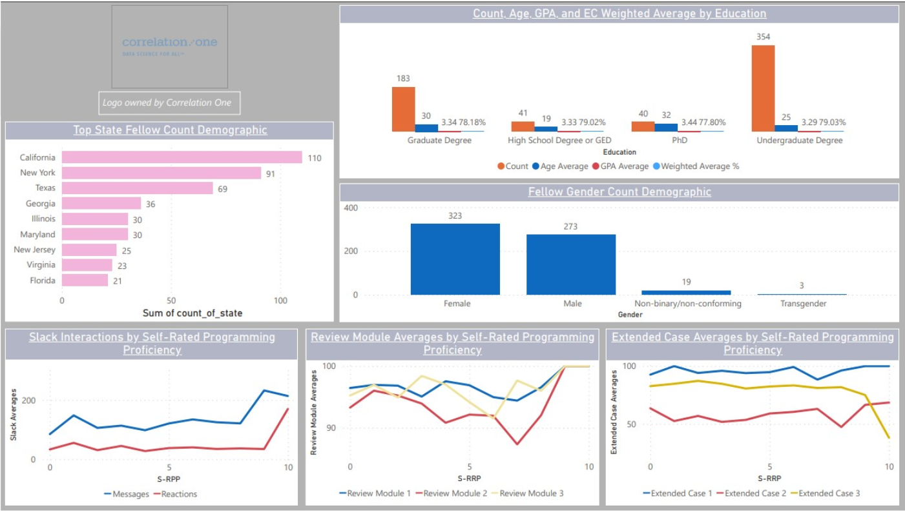
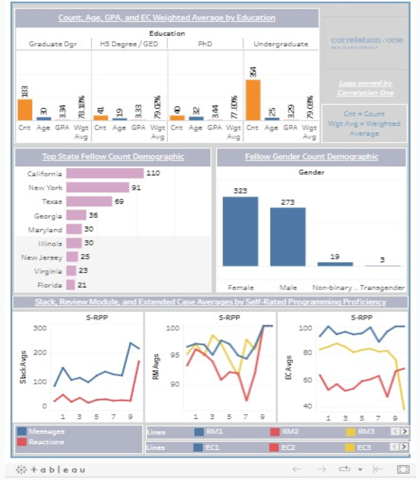
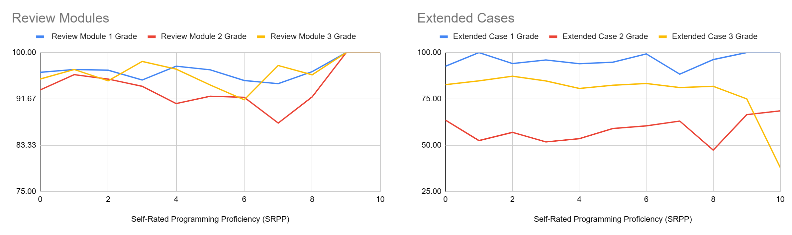

Correlation One / Standalone Operations Analyst recruiting assessment
Distinguished Scholar
Selection.
A data-quality-first selection framework for identifying exemplary fellows while protecting fairness, consistency, and the interpretation of learner engagement.
01 / The assessment
Define excellence.
Explain the method.
For a standalone Operations Analyst recruiting assessment, I designed a transparent approach for selecting approximately the top 10% of a 618-fellow cohort. This exercise was separate from my Project Ruby Teaching Assistant and curriculum development work.
The objective was to combine academic achievement, 14-week attendance, and participation signals without allowing missing submissions or reporting gaps to distort rankings.
02 / March 2023 selection methodology
Start with GPA.
Check eligibility.
My first Operations Analyst take-home assessment examined a cohort of 618 fellows and targeted roughly 10% for Distinguished Scholar recognition. GPA was the primary ranking measure; attendance, complete assignments, performance across Extended Cases and Review Modules, and basic Slack participation were qualifying checks.
| Step | March assessment approach | Purpose |
|---|---|---|
| 1 · Preserve the dataset | Keep exercise_data_raw unchanged and work from exercise_data_use. | Maintain a transparent trail from source to shortlist. |
| 2 · Resolve attendance gaps | Flag blank attendance cells K116:K152 as missing operational records, not automatically as absences. | Avoid silently assigning zero attendance to missing records. |
| 3 · Complete academic work | Exclude missing assignment submissions; require at least 80% averages in Extended Cases and Review Modules. | Keep missing work from inflating averages. |
| 4 · GPA and attendance | Require GPA ≥3.5 and attendance ≥90% across 14 weeks. | Prioritize sustained academic achievement. |
| 5 · Participation and final ranking | Use modest Slack engagement (at least three messages and three reactions), then rank qualifying fellows by GPA to select 62. | Balance participation with academic merit. |
10% worksheet is a GPA-sorted working view, not a final selection by itself. Missing attendance entries remain a flagged operational assumption until confirmed. Final award decisions also require an agreed policy for GPA ties.View the revised two-page assessment report ↗ · Download PDF
03 / Exploratory analysis
Understand the cohort.
Improve decisions.
Beyond the scholar shortlist, I used Excel, Power BI, and Tableau to visualize patterns in demographics, education, participation, and academic performance. The S-RPP (self-rated programming proficiency) charts are supplemental exploratory analysis, not selection requirements or part of Project Ruby’s EC3 grading system.
Where high performers live
Compare GPA performance and representation across states. This supports testing recruitment beyond high-volume states such as California, New York, and Texas.
Education and achievement
High School / GED fellows averaged 79.02% on Extended Cases, compared with 79.03% for undergraduate fellows, a difference of 0.01 percentage points.
Inclusive outreach
Suggested voluntary alumni testimonials, including underrepresented LGBTQ+ voices, to broaden outreach while respecting participants’ privacy.
Learning assessment gap
S-RPP comparisons suggested strong scores on short Review Modules did not always translate into equally strong Extended Case outcomes. The charts describe cohort performance, not the Distinguished Scholar eligibility formula.
04 / Visualization portfolio
Power BI and Tableau.
Two tools, one analytical story.
I developed this analysis using spreadsheet data preparation and both Microsoft Power BI and Tableau. The Power BI dashboard is featured first for its multi-view cohort overview, with the Tableau visual included to show the same cross-tool analysis capability.


S-RPP / learning-performance analysis
These original Review Module and Extended Case comparison charts are presented as separate exploratory findings. They do not determine scholar selection or represent Project Ruby’s curriculum implementation.

Inspect Review Modules chart ↗ · Inspect Extended Cases chart ↗
.pbix report has been recovered. This page displays its supplied dashboard image. An interactive Power BI Service embed can be added when an authorized embed URL is available.